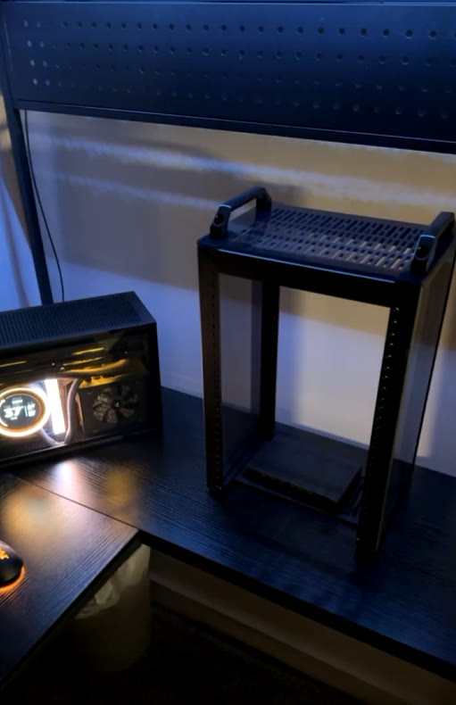
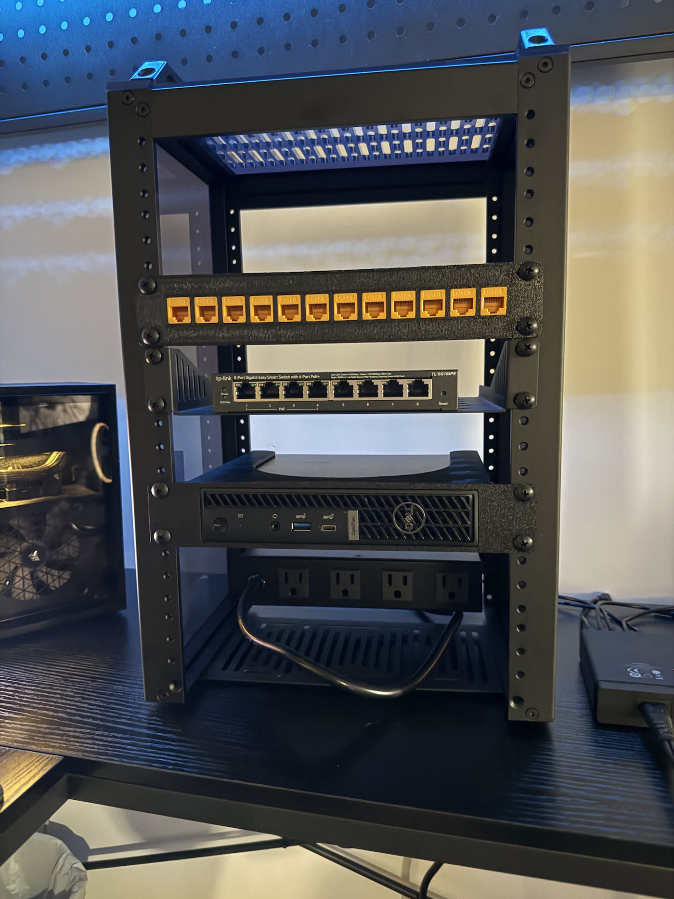
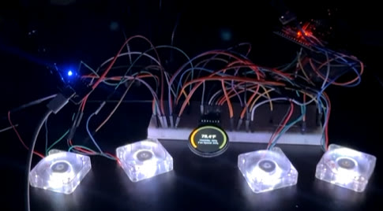
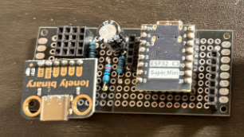
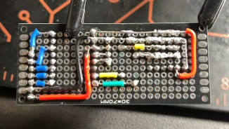

why
I wanted somewhere to dump my photos that wasn't someone else's cloud, and an excuse to actually learn proxmox, docker, and kubernetes instead of just putting them on a resume and hoping nobody asks. Also i track a weird amount of data about my life — workouts, food, every skydive — and it needs to live somewhere i own.
It started as "i'll just get a NAS" and turned into a rack. This is apparently how it goes for everyone.
how it's wired
LAN (apartment wall jack)
└── [ GL.iNet GL-SFT1200 (opal) ]
└── [ TP-Link TL-SG108PE (switch) ]
├── [ Dell OptiPlex Micro 7020 ]
│ ├── [ proxmox ve ]
│ │ ├── vm debian, running immich
│ │ ├── vm home assistant os
│ │ ├── lxc mqtt
│ │ └── lxc vaultwarden (docker)
│ └── [ 2tb external hdd ]
└── [ pi 4 running influxdb + grafana ]
This changes a lot. It's roughly right. Tailscale gets me in from anywhere — my gaming pc is the subnet router for now, which means the lab goes down when i restart my pc. Working on it.
the hardware
- box
- Dell optiplex micro 7020, i5-13500T, 24gb ddr5. Headless, lives in a deskpi rackmate t1 (8U). Picked it up locally.
- disks
- 256gb nvme for proxmox, 2tb nvme for VMs and photos. Two hard drives in a usb enclosure for backups.
- os
- Proxmox ve. Mostly LXC containers plus a couple VMs.
- network
- TP-Link 8-port poe switch, gl.inet opal as the access point, tailscale for remote access.
- backups
- The usb drives. If the power goes out, everything just turns off. A ups is on the list.


what's running
immichPhotos and videos, replaces paying for cloud storage. Lives in a debian vm.mqttThe message bus everything else talks over.influxdb + grafanaDashboards for the data i track about my life.haosHome assistant vm.vaultwardenSelf-hosted bitwarden, so my passwords live on my own hardware too. Runs in docker inside an lxc.
stuff i broke
Set the static ip on the wrong subnet during the proxmox install, then spent a while wondering why nothing could reach it. It was doing exactly what i told it to do.
the fan controller saga
I wanted 40mm fans with rgb that pulses between orange and white. Simple ask, i thought. My first plan was to plug the fans into a usb hub and have the mini pc control their speed and color. Turns out usb fans only take power — there's no data line, so the pc can't tell them anything. Also most 40mm fans are 12v and usb gives 5v, so they'd barely spin. Strike one.
The real answer was a whole food chain: pwm for speed, an addressable data line for the rgb, and a microcontroller sitting in between to drive it all. So now there's an esp32 whose entire job is fans and lights. It talks over mqtt, which means the mini pc is still the one in charge — it just took three more hops than i expected.

The esp32 fought me too. I had one from a starter kit that i was convinced needed an expansion board i didn't have, so i never got it going. It didn't need one. That plus drivers, com ports that vanish mid-upload, and boot buttons held in the right order — flashing a microcontroller on windows is a ritual.
Then i gave the controller a static ip, because that felt responsible. Learned later that with mqtt only the broker needs a fixed address — everything else just dials out. It's on dhcp now and nothing cares.
Once the breadboard version worked, i soldered the whole thing onto protoboard so it could live in the rack without a bump undoing it.


Current state: the controller is on the network and answering. Also, 40mm fans whine if you run them fast, so they'll run slow and temperature-controlled. Everything is a tradeoff.
next
Finish the fan wall, a little circular lcd on the fan panel showing temps, and getting homelab stats onto my smart glasses. None of this is necessary. That's the point.
Configs will end up on github eventually.